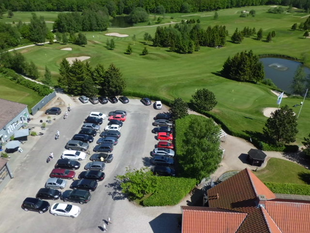

<div class="pages">
  <div data-page="faciliteter" class="page navbar-fixed toolbar-fixed" >
    <div class="navbar">
      <div class="navbar-inner">
        <div class="left">
          <a href="#" class="link back icon-only"><i class="icon icon-back"></i></a>
          <!-- <a href="#" class="back link icon-only"><i class="icon icon-back"></i></a> -->
        </div>
        <div class="center">Faciliteter</div>
        <!-- <div class="right"></div> -->
        <div class="right">
        </div>
      </div>
    </div>
    <div class="page-content" style="padding-top:45px;">
       <div class="content-block">
          <p>For at en klub med over 1.100 medlemmer og mange gæster skal kunne fungere, er det nødvendigt med nogle velfungerende faciliteter i forbindelse med golfbanen. Udover vores store parkeringsplads findes reserveparkering i haven.
          <br /><br />
          
          <br />
          Klubhuset<br />
          Huset er centrum for vores klubliv, og efter ombygning i 2000 og 2002 har vi i dag et velfungerende samlingssted, hvor man før og efter de sportslige udfordringer kan dyrke de mindst lige så vigtige sociale aktiviteter.
          <br /><br /> 
          Sekretariatet<br />
          Sekretariatet er hjertet i vores medlemspleje og service til vores mange gæster.
          <br /><br /> 
          Restauranten<br />
          Cafe InGolf i klubhuset er et utrolig vigtigt element i klublivet. Drikkevarer og velsmagende mad til rimelige priser er vores slogan, og personalet får da også mange roser.
          <br /><br /> 
          Shoppen<br />
          Golf shoppen som nu bliver drevet af Ulrik, er en virkelig lækker butik med stort udvalg til yderst rimelige priser. Det er også her, du får repareret dit udstyr af Frank.
          <br /><br /> 
          Omklædning<br />
          Omklædningsfaciliteter i Hornbæk Golfklub finder du dels nær bagrummet, hvor klubben har indrettet 2 helt nye bade- og omklædningsrum, dels i klubhuset, hvor der er mulighed for omklædning på toiletterne.
          <br /><br /> 
          Bagskabe<br />
          Der er mulighed for at leje bagskabe til opbevaring af dit golfudstyr.
          <br /><br /> 
          Træning<br />
          Træning er nødvendig for de fleste, hvad enten man er nybegynder eller professionel. Læs om hvordan du book'er tid hos vores trænere, om vores Driving Range, om øveområdet for indspil og vores store putting green i haven.
          <br /><br /> 
          Golfvogne og el-biler<br />
          For de af vores medlemmer som har batteridrevne golfvogne, kan batteriopladningspladser lejes. Hvis et medlem er så dårligt gående, at en el-bil er nødvendig for at udøve golfspillet, kan bestyrelsen give tilladelse hertil. Klubben tilbyder leje af parkeringsplads med faciliteter til genopladning af bilens batteri.</p>
        </div>
    </div>
    </div>
    </div>
  </div>
</div>
